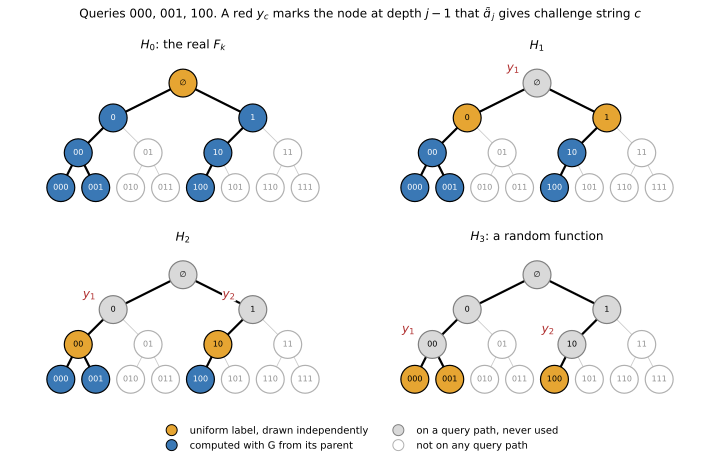
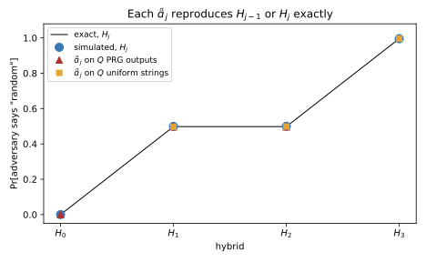
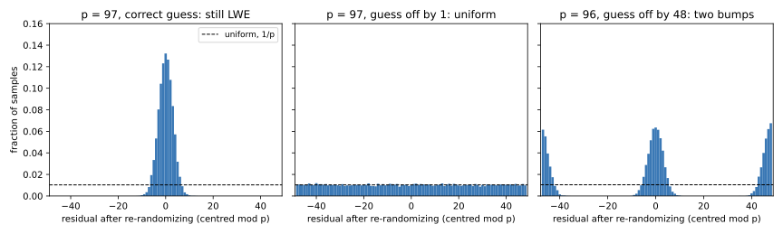
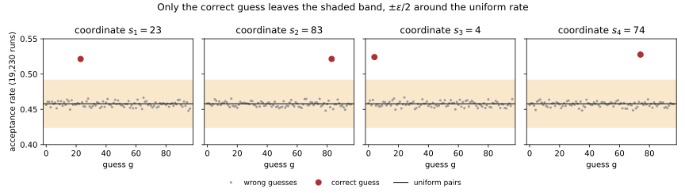

Appendix I — Pseudorandom functions and learning with errors
This appendix proves two results that Cryptography basics states without a full proof. The first is that the GGM tree, named after Goldreich, Goldwasser and Micali, is a pseudorandom function (PRF) whenever the pseudorandom generator (PRG) it is built from is secure. The second is about learning with errors (LWE), a problem in which a secret vector is hidden behind noisy linear equations: when the arithmetic is modulo a prime, an algorithm that can only recognize such equations can be turned into one that finds the secret. Both proofs are reductions, which turn an algorithm that solves one problem into an algorithm that solves another. In both, the new algorithm uses the input it must judge, its challenge, to build exactly the situation the old algorithm expects, so the heart of each proof is a check that two distributions are identical. Table I.1 lists where each result comes from.
| Derivation | Where the chapter states it | What the chapter gives |
|---|---|---|
| Section I.1: the GGM tree is a PRF, with advantage at most \(nQ\) times the PRG’s | Section 8.5.1 | The theorem with its proof cited to Goldreich, and the idea in one paragraph |
| Section I.2: search LWE reduces to decision LWE for prime \(p\) polynomial in \(d\) | Definition 8.12 | One sentence describing Regev’s idea |
The notation is the chapter’s, with two letters changed. The security parameter \(\lambda\) is the length of keys and seeds in bits, and \(U_k\) stands for the uniform distribution on strings of \(k\) bits. An adversary is an algorithm that tries to break a scheme, usually by asking it questions called queries. It is written \(\mathcal A\), and a second adversary built from it in a reduction is written \(\mathcal B\). The number of queries is \(Q\) and a bound on an advantage is \(\nu\), because in this book \(q\) is a sampling rate and \(\varepsilon\) a privacy parameter. The modulus in learning with errors is \(p\).
A distinguisher receives input from one of two distributions, its two “worlds”, and outputs a bit. Its advantage is the absolute difference between how often it outputs 1 in the two worlds. A procedure is efficient if its running time grows at most polynomially in \(\lambda\), and a quantity is negligible if it shrinks faster than one over any polynomial in \(\lambda\).
I.1 The GGM tree is a pseudorandom function
I.1.1 What the chapter uses
A PRG stretches a short random seed into a longer string that efficient algorithms cannot tell from random. Here the generator doubles the length, \(G\colon \{0,1\}^\lambda \to \{0,1\}^{2\lambda}\), and its output is a left half \(G_0(s)\) followed by a right half \(G_1(s)\), each as long as the seed. A PRG distinguisher \(\mathcal B\) receives one \(2\lambda\)-bit string and outputs a bit, with advantage \[\mathrm{Adv}_{\mathrm{PRG}}(\mathcal B) = \big|\Pr[\mathcal B(G(U_\lambda)) = 1] - \Pr[\mathcal B(U_{2\lambda}) = 1]\big|. \tag{I.1}\]
The GGM tree turns \(G\) into a keyed function on \(n\)-bit inputs. Picture a binary tree of depth \(n\) in which every node carries a \(\lambda\)-bit label. The root’s label is the key \(k\), and a node’s left and right children get \(G_0\) and \(G_1\) of the node’s label. An input \(x = x_1 x_2 \cdots x_n\) is read as directions from the root to a leaf, left at level \(i\) if \(x_i = 0\) and right if it is 1, and the output is the label of the leaf: \[F_k(x) = G_{x_n}\big(\cdots G_{x_2}\big(G_{x_1}(k)\big)\cdots\big). \tag{I.2}\] A node is named by the bits that lead to it, so node \(01\) is the right child of the left child of the root, and its depth is the length of its name.
In the PRF game, a fair coin decides whether a box, called an oracle, holds \(F_k\) with a uniform key or a truly random function \(f\), which gives each \(n\)-bit input an independent uniform \(\lambda\)-bit output. An adversary \(\mathcal A\) sends up to \(Q\) queries, each chosen after seeing the earlier answers, and outputs a bit. Writing \(\mathcal A^O\) for \(\mathcal A\) run with oracle \(O\), its advantage is \[\mathrm{Adv}_{\mathrm{PRF}}(\mathcal A) = \big|\Pr[\mathcal A^{F_k} = 1] - \Pr[\mathcal A^{f} = 1]\big|, \tag{I.3}\] where the probabilities are also over the adversary’s own random choices. For any adversary \(\mathcal A\) that makes at most \(Q\) queries, there is a PRG distinguisher \(\mathcal B\) that runs \(\mathcal A\) once and otherwise evaluates \(G\) fewer than \(nQ\) times, such that \[\mathrm{Adv}_{\mathrm{PRF}}(\mathcal A) = nQ\cdot\mathrm{Adv}_{\mathrm{PRG}}(\mathcal B). \tag{I.4}\] PRG security only limits fast distinguishers, so the running time matters. If no distinguisher with \(\mathcal B\)’s running time has PRG advantage above \(\nu\), then no \(Q\)-query adversary has PRF advantage above \(nQ\,\nu\), which is the chapter’s bound. The chapter cites Goldreich, Foundations of Cryptography, Vol. 1, §3.6, for the proof.
I.1.2 The idea
The proof walks from the real function to a random one in \(n\) steps, one level of the tree at a time. The \(j\)-th intermediate world, the hybrid \(H_j\), gives every node at depth \(j\) a fresh uniform label and computes everything below it with \(G\). So \(H_0\) is the real \(F_k\) and \(H_n\) is a random function. Going from \(H_{j-1}\) to \(H_j\) replaces, at each node at depth \(j - 1\) that the queries pass through, \(G\) of a uniform label by a uniform string, which is the PRG’s game. Figure I.1 shows the four hybrids for \(n = 3\) and three queries.

The subtle part is that the adversary chooses its queries as it goes, so a reduction \(\mathcal B_j\) with \(Q\) challenge strings cannot know in advance which nodes at depth \(j - 1\) the queries will pass through. So it hands out its strings like cloakroom tickets: the first time a query passes through a new node at depth \(j - 1\), that node gets the next unused string and keeps it for the rest of the game. Table I.2 follows \(\mathcal B_2\) through the three queries of Figure I.1.
| Query | Node at depth 1 | First visit? | String used | Node at depth 2 | Its label |
|---|---|---|---|---|---|
| 000 | 0 | yes | \(y_1\) | 00 | left half of \(y_1\) |
| 001 | 0 | no | \(y_1\) | 00 | left half of \(y_1\) |
| 100 | 1 | yes | \(y_2\) | 10 | left half of \(y_2\) |
I.1.3 Derivation
Steps 1 to 3 set up the hybrids and show that two neighbouring hybrids differ only in the distribution of one table. Steps 4 and 5 build the reduction \(\mathcal B_j\), which judges \(Q\) strings at once, and show that it recreates either neighbour exactly. Steps 6 and 7 turn it into a distinguisher that judges a single string and add up the levels, and step 8 restates the result for efficient adversaries.
Define the hybrids. For \(j = 0, 1, \dots, n\), hybrid \(H_j\) gives every node at depth \(j\) an independent uniform \(\lambda\)-bit label \(L(x_1\cdots x_j)\), all drawn before the game starts. It answers the query \(x\) by walking down from the depth-\(j\) node on its path: \[H_j(x) = G_{x_n}\big(\cdots G_{x_{j+1}}\big(L(x_1\cdots x_j)\big)\cdots\big). \tag{I.5}\] With \(j = 0\) the only label is the root’s, which is a uniform key, so \(H_0\) is \(F_k\). With \(j = n\) the answer is the leaf’s own label, independent and uniform for each input, so \(H_n\) is a random function. The table of \(2^j\) labels can be huge, but the hybrids are thought experiments, and only the reduction has to be efficient.
Split the advantage into levels. Write \(h_j = \Pr[\mathcal A^{H_j} = 1]\) for how often the adversary says 1 in hybrid \(H_j\). In the sum \(\sum_{j=1}^n (h_{j-1} - h_j)\), each intermediate \(h_j\) appears once with a plus sign and once with a minus sign, so the sum telescopes: \[h_0 - h_n = \sum_{j=1}^n (h_{j-1} - h_j). \tag{I.6}\] The chapter states this telescoping, with absolute values, as Lemma 8.2. The left side is \(\Pr[\mathcal A^{F_k} = 1] - \Pr[\mathcal A^f = 1]\), whose absolute value is \(\mathrm{Adv}_{\mathrm{PRF}}(\mathcal A)\).
Write two neighbouring hybrids as one table. Fix \(j \ge 1\) and look at a node \(w\) at depth \(j - 1\). In \(H_{j-1}\), its two children \(w0\) and \(w1\) get the two halves of \(G(L(w))\), so together they carry the string \(G(L(w))\). Different nodes \(w\) have independent uniform labels, so these strings are independent, each distributed as \(G(U_\lambda)\). In \(H_j\), the children carry two independent uniform labels, so together they carry a string distributed as \(U_{2\lambda}\), again independently for each \(w\). Below depth \(j\) both hybrids compute with \(G\) in the same way. So the two hybrids are one world, except for the distribution \(P\) that the children’s strings come from. In that world, a table \(T\) gives each node \(w\) at depth \(j - 1\) its own independent draw \(T(w)\) from \(P\). The query \(x\) is answered by taking the half of \(T(x_1\cdots x_{j-1})\) that bit \(x_j\) selects and walking down with \(G\): \[W_j^{P}(x) = G_{x_n}\big(\cdots G_{x_{j+1}}\big(\text{half } x_j \text{ of } T(x_1\cdots x_{j-1})\big)\cdots\big). \tag{I.7}\] With \(P = G(U_\lambda)\) this world is \(H_{j-1}\), and with \(P = U_{2\lambda}\) it is \(H_j\). For \(j = 1\) the only node at depth 0 is the root, so the table has a single entry.
Lazy sampling gives the same view. There are two ways to fill the table \(T\). In the advance version, every entry is drawn before the game starts. In the lazy version, each entry is drawn from \(P\) the first time a query needs it, and reused afterwards. The adversary’s view is everything it sees: its own random choices (its coins) and all the answers it receives. The claim is that the view has the same distribution in both versions, as a die rolled earlier and hidden under a cup is exactly as random, when you lift the cup, as a die rolled now.
The proof goes one query at a time. Call the history after \(i\) queries the adversary’s coins together with the table entries used so far. Every answer, and therefore every next query, is a function of the history. If the next query needs an entry that was already used, both versions answer with that same entry, which is part of the history. If it needs a new entry, then in the advance version that entry was drawn independently of the other entries and of the adversary’s coins, so given the history it is still distributed as \(P\). In the lazy version it is a fresh draw from \(P\), so the same holds. So in both versions, the history after \(i + 1\) queries is the history after \(i\) queries plus one entry with the same conditional distribution. The probability of a whole history is the product of these conditional probabilities, one per query (the chain rule), so the histories have the same distribution after every query, and so does anything computed from them, including the adversary’s output.
Build \(\mathcal B_j\), which judges \(Q\) strings at once. The reduction \(\mathcal B_j\) receives \(Q\) strings \(y_1, \dots, y_Q\) of \(2\lambda\) bits each, drawn independently from one distribution \(P\), which is either \(G(U_\lambda)\) or \(U_{2\lambda}\). It runs \(\mathcal A\) and keeps a ticket table, which starts empty. When a query \(x\) arrives, \(\mathcal B_j\) looks at the node \(w = x_1\cdots x_{j-1}\) at depth \(j - 1\) on its path, and if \(w\) has no ticket yet, gives it the next unused index \(c\). It then answers with the half of \(y_c\) that \(x_j\) selects, walked down with \(G\) exactly as in step 3. At the end, \(\mathcal B_j\) outputs whatever \(\mathcal A\) outputs. Each query passes through one node at depth \(j - 1\), so at most \(Q\) nodes ever need a ticket and the strings never run out.
The string \(y_c\) is first read when the \(c\)-th new node appears. Until then, everything \(\mathcal B_j\) has done depends only on \(y_1, \dots, y_{c-1}\) and on \(\mathcal A\)’s coins, and \(y_c\) is independent of all of them. So \(\mathcal B_j\) fills the table of step 3 lazily, in the sense of step 4, and \(\mathcal A\)’s view inside \(\mathcal B_j\) is exactly its view in \(W_j^{P}\). With step 3, this gives \[\Pr\big[\mathcal B_j(G(U_\lambda)^Q) = 1\big] = h_{j-1}, \qquad \Pr\big[\mathcal B_j(U_{2\lambda}^Q) = 1\big] = h_j, \tag{I.8}\] where \(G(U_\lambda)^Q\) means \(Q\) independent outputs of \(G\) on uniform seeds, and \(U_{2\lambda}^Q\) means \(Q\) independent uniform strings.
Go from \(Q\) strings to one. This is the argument of the chapter’s hybrid lemma for many samples. Write \(g_i\) for the probability that \(\mathcal B_j\) outputs 1 on a list of \(Q\) independent strings whose first \(i\) are uniform and whose other \(Q - i\) are outputs of \(G\). The two ends are the cases of step 5: \(g_0 = h_{j-1}\) (all from \(G\)) and \(g_Q = h_j\) (all uniform). The mixed lists in between match no hybrid, and they do not need to. The one-string distinguisher \(\mathcal B'_j\) takes a challenge string \(z\) and picks a position \(i\) uniformly from 1 to \(Q\). It puts uniform strings before position \(i\), puts \(z\) at position \(i\), and after it puts outputs of \(G\) on seeds it draws itself, which is possible because \(G\) is public. Then it outputs \(\mathcal B_j\)’s answer on the whole list. If \(z\) comes from \(G\), the list starts with \(i - 1\) uniform strings, so \(\mathcal B'_j\) says 1 with probability \(g_{i-1}\), and if \(z\) is uniform, the probability is \(g_i\). Averaging over \(i\) gives \(\frac1Q\sum_{i=1}^Q (g_{i-1} - g_i)\), which telescopes as in step 2 to \(\frac1Q(g_0 - g_Q)\): \[\Pr[\mathcal B'_j(G(U_\lambda)) = 1] - \Pr[\mathcal B'_j(U_{2\lambda}) = 1] = \frac1Q\,(h_{j-1} - h_j). \tag{I.9}\]
Pick the level at random and add up. The final distinguisher \(\mathcal B\) picks \(j\) uniformly from \(\{1, \dots, n\}\) and runs \(\mathcal B'_j\). Averaging step 6 over \(j\) and using Equation I.6, \[\Pr[\mathcal B(G(U_\lambda)) = 1] - \Pr[\mathcal B(U_{2\lambda}) = 1] = \frac1n\sum_{j=1}^n \frac1Q\,(h_{j-1} - h_j) = \frac{h_0 - h_n}{nQ}. \tag{I.10}\] Taking absolute values gives Equation I.4. As for the cost, \(\mathcal B\) runs \(\mathcal A\) once. It computes at most \(Q - 1\) outputs of \(G\) for the list, and at most \(n - 1\) evaluations of \(G\) per query to walk down the tree. That is at most \((Q - 1) + Q(n - 1) = nQ - 1\) evaluations, fewer than \(nQ\).
Conclude for efficient adversaries. Suppose \(n\) and \(Q\) grow at most polynomially in \(\lambda\). Then an efficient \(\mathcal A\) gives an efficient \(\mathcal B\). If \(\mathcal A\)’s advantage were not negligible, it would be at least \(\lambda^{-c}\) for some exponent \(c\) and infinitely many \(\lambda\). Dividing by the polynomial \(nQ\) keeps it above one over a polynomial, so \(\mathcal B\)’s advantage \(\mathrm{Adv}_{\mathrm{PRF}}(\mathcal A)/(nQ)\) would not be negligible either, and \(G\) would not be a PRG. So if \(G\) is a PRG, the GGM tree is a PRF.
Adaptivity matters only in step 5. A reduction that fixed in advance which nodes get challenge strings would have to cover all \(2^{j-1}\) nodes at depth \(j - 1\), so the loss factor would grow from \(Q\) to \(2^{j-1}\). The ticket rule lets the adversary’s own queries decide where the \(Q\) strings go, and step 4 is why that changes nothing in what the adversary sees.
I.1.4 Checking it
The script runs the whole reduction on a toy with \(\lambda = 8\), \(n = 3\) and \(Q = 3\). Its PRG is broken on purpose, so that every advantage is large enough to measure: \(G(s) = (s, f(s))\) for a fixed random permutation \(f\) of the 8-bit strings. In the real \(F_k\), every left step keeps the label and every right step applies \(f\), so \(F_k(000) = k\), \(F_k(001) = f(k)\), \(F_k(100) = f(k)\) and \(F_k(110) = f(f(k))\).
The adversary asks 000 and then 001, and it chooses its third query adaptively, 100 if the first answer starts with a 0 bit and 110 otherwise, so that the check also covers the subtle part of step 5. Check 1 asks whether the second answer is \(f\) of the first. Check 2 asks whether the third answer is \(f\) of the first, after 100, or \(f\) applied twice to the first, after 110. The adversary flips a coin to choose one check, and outputs 1, meaning “random function”, if that check fails. A check on independent uniform labels fails with probability \(1 - 2^{-8}\). Both checks pass in \(H_0\), so \(h_0 = 0\). In \(H_1\) and \(H_2\), check 1 still passes, because the first two leaves hang below one node and are computed from it with \(G\), but check 2 compares independent branches, so \(h_1 = h_2 = \frac12(1 - 2^{-8}) = 0.4980\). In \(H_3\) both checks fail, so \(h_3 = 1 - 2^{-8} = 0.9961\). Table I.3 compares these with simulation.
| \(j\) | Exact \(h_j\) | Simulated \(h_j\) | \(\mathcal B_j\) on 3 outputs of \(G\) (should be \(h_{j-1}\)) | \(\mathcal B_j\) on 3 uniform strings (should be \(h_j\)) |
|---|---|---|---|---|
| 0 | 0.0000 | 0.0000 | ||
| 1 | 0.4980 | 0.4994 | 0.0000 | 0.5005 |
| 2 | 0.4980 | 0.4985 | 0.4979 | 0.4993 |
| 3 | 0.9961 | 0.9962 | 0.4983 | 0.9964 |
Each \(\mathcal B_j\) lands on the hybrid that step 5 predicts, to within simulation noise of about 0.001, even though the adversary’s third query depends on what it has seen. Figure I.2 draws the same comparison. The single-sample distinguisher \(\mathcal B\) of step 7 has advantage 0.1105, against the predicted \(0.9961/9 = 0.1107\). The factor \(nQ\) is lost inside \(\mathcal B\), because it spreads its effort evenly over all levels and all \(Q\) positions, while the adversary’s rate jumps only at levels 1 and 3.

I.1.5 What it does not cover
The proof needs every input to have the same length \(n\). With inputs of different lengths the GGM tree is not a PRF, because \(F_k(0)\) is the label of the node that \(F_k(00)\) hangs from, so an adversary can check whether \(F_k(00) = G_0(F_k(0))\). The proof also assumes that \(G\) is deterministic, because a node’s label must give the same children every time a query passes through it. It assumes that \(G\) doubles its input exactly, but a generator that stretches by only one bit can be applied repeatedly to its own output to reach double length. Finally, Equation I.4 compares advantages. A concrete guarantee, such as “no attacker running for \(2^{128}\) steps succeeds”, needs a concrete bound on the advantage of PRG distinguishers with \(\mathcal B\)’s running time.
I.2 Search LWE reduces to decision LWE
I.2.1 What the chapter uses
Fix a dimension \(d\), a modulus \(p\) and an error distribution \(\chi\) on integers that are small compared with \(p\). Write \(\mathbb Z_p\) for the integers \(0, \dots, p - 1\) with arithmetic mod \(p\), and \(\mathbb Z_p^d\) for vectors of \(d\) such numbers. The secret \(s\) is a vector in \(\mathbb Z_p^d\). An LWE sample is a pair made of a uniform random vector \(a\) in \(\mathbb Z_p^d\) and the number \[b = \langle a, s\rangle + e \bmod p, \qquad \langle a, s\rangle = \sum_{j=1}^d a_j s_j, \tag{I.11}\] where the error \(e\) is drawn from \(\chi\). Every sample has its own fresh \(a\) and \(e\), and the secret is the same in all of them. Search LWE asks for \(s\), given as many samples as needed, and decision LWE asks whether \(m\) given pairs are LWE samples or uniform pairs in \(\mathbb Z_p^d \times \mathbb Z_p\). The chapter shows that search is at least as hard as decision, and for the converse it gives one sentence on Regev’s idea, which this section proves.
Assume that \(p\) is prime, and that a decision algorithm \(\mathcal A\), given \(m\) pairs, has advantage at least \(\nu\) for every secret, over the pairs and over \(\mathcal A\)’s own random choices: \[\big|\Pr[\mathcal A(m \text{ LWE samples with secret } s) = 1] - \Pr[\mathcal A(m \text{ uniform pairs}) = 1]\big| \ge \nu \quad\text{for every } s \in \mathbb Z_p^d. \tag{I.12}\] Then, for any failure probability \(\beta\), there is a search algorithm that finds all of \(s\) with probability at least \(1 - \beta\). It calls \(\mathcal A\) at most \((dp + 1)N\) times and uses \(dpNm\) LWE samples, where the number of repetitions per test is \[N = \left\lceil \frac{8}{\nu^2}\ln\frac{2(dp + 1)}{\beta} \right\rceil. \tag{I.13}\] The advantage \(\nu\) is noticeable if it is at least one over some polynomial in \(d\). In that case, and when \(p\), \(m\) and \(\mathcal A\)’s running time are also polynomial in \(d\), the search runs in polynomial time.
I.2.2 The idea
To test a guess \(g\) for the first coordinate \(s_1\), take an LWE sample, add a random number \(r\) to the first coordinate of \(a\), and add \(rg\) to \(b\). If the guess is right, the change to \(b\) is exactly the change to \(\langle a, s\rangle\), so the new pair is again an LWE sample. If the guess is wrong, the error picks up the extra term \(r(g - s_1)\), which is uniform when \(p\) is prime, so the new pair is uniform. Table I.4 makes this concrete with \(p = 5\), \(s_1 = 3\) and error \(e = 1\). With the right guess \(g = 3\) the new error stays at 1 for every \(r\). With the wrong guess \(g = 1\) it becomes \(1 - 2r \bmod 5\), which takes each of the five values exactly once as \(r\) runs through \(0, \dots, 4\), so a uniform \(r\) makes it uniform.
| \(r\) | 0 | 1 | 2 | 3 | 4 |
|---|---|---|---|---|---|
| Right guess \(g = 3\): \(1 + 0 \cdot r\) | 1 | 1 | 1 | 1 | 1 |
| Wrong guess \(g = 1\): \(1 - 2r \bmod 5\) | 1 | 4 | 2 | 0 | 3 |
I.2.3 Derivation
Fix a coordinate \(\ell\) and a guess \(g \in \mathbb Z_p\). Steps 1 to 4 show that a re-randomized sample is an LWE sample for the right guess and a uniform pair for a wrong one. Steps 5 to 8 feed such samples to \(\mathcal A\), compare how often it says 1 with its rate on uniform pairs, and so find each coordinate with a failure probability you choose.
Re-randomize. Take an LWE sample \((a, b)\) with \(b = \langle a, s\rangle + e\). Draw a fresh \(r\) uniform in \(\mathbb Z_p\), independent of everything else. Let \(a'\) be \(a\) with \(r\) added to its \(\ell\)-th coordinate, and let \(b' = b + rg \bmod p\). Adding \(r\) to \(a_\ell\) adds \(r s_\ell\) to the inner product, so \(\langle a', s\rangle = \langle a, s\rangle + r s_\ell\). Subtracting this from \(b'\) leaves the residual \[b' - \langle a', s\rangle = e + r(g - s_\ell) \bmod p. \tag{I.14}\]
The new vector is still uniform. For each fixed \(r\), adding \(r\) to one coordinate is a bijection of \(\mathbb Z_p^d\). By Lemma 8.3, a bijection maps the uniform distribution to itself. Since \(a\) is uniform and independent of \(r\) and \(e\), the vector \(a'\) is uniform and independent of \(e\).
A right guess gives an LWE sample. If \(g = s_\ell\), the residual Equation I.14 is just \(e\), so \(b' = \langle a', s\rangle + e\). With step 2, \(a'\) is uniform and \(e\) is an independent draw from \(\chi\), so \((a', b')\) is an LWE sample with the same secret \(s\).
A wrong guess gives a uniform pair. Now let \(c = g - s_\ell \ne 0\). This is where \(p\) must be prime, because every nonzero number mod a prime has an inverse; for example, \(2 \cdot 3 = 6 \equiv 1 \pmod 5\). Fix the error \(e\) and write \(v = e + rc\) for the residual. The map that sends \((a, r)\) to \((a', v)\) can be undone: the residual gives back \(r = (v - e)c^{-1}\), and then subtracting \(r\) from coordinate \(\ell\) of \(a'\) gives back \(a\). So this map is a bijection of \(\mathbb Z_p^d \times \mathbb Z_p\). The pair \((a, r)\) is uniform there and independent of \(e\), so by Lemma 8.3 the pair \((a', v)\) is uniform, whatever \(e\) is. Finally, \(b' = \langle a', s\rangle + v\), and the map from \((a', v)\) to \((a', b')\) is another bijection, undone by subtracting \(\langle a', s\rangle\) from \(b'\). So by Lemma 8.3 once more, \((a', b')\) is uniform on \(\mathbb Z_p^d \times \mathbb Z_p\).
The test feeds \(\mathcal A\) exactly one of its two worlds. Each re-randomized pair uses its own fresh sample and its own \(r\), so \(m\) of them are independent. By steps 3 and 4, they are \(m\) LWE samples with secret \(s\) when the guess is right, and \(m\) uniform pairs when it is wrong. Write \(\alpha_{\mathrm{LWE}}\) and \(\alpha_{\mathrm U}\) for the probabilities that \(\mathcal A\) outputs 1 in these two cases. Then a run of the test outputs 1 with probability \(\alpha_{\mathrm{LWE}}\) for the right guess and \(\alpha_{\mathrm U}\) for every wrong one, and \(|\alpha_{\mathrm{LWE}} - \alpha_{\mathrm U}| \ge \nu\) by assumption.
Estimate the rates. The search does not know \(\alpha_{\mathrm{LWE}}\) or \(\alpha_{\mathrm U}\), so it estimates them by repetition. For the baseline, it draws \(m\) uniform pairs itself, runs \(\mathcal A\) on them, and repeats \(N\) times, and the fraction of 1s is its estimate \(\hat\alpha_{\mathrm U}\). For each coordinate \(\ell\) and guess \(g\), it repeats the test \(N\) times with fresh samples and fresh \(r\), and the fraction of 1s is \(\hat\alpha_{\ell,g}\). Each estimate is an average of \(N\) independent 0/1 values, so by Hoeffding’s inequality (Concentration inequalities) it lands at least \(t\) away from its mean with probability at most \(2e^{-2Nt^2}\). Step 7 needs every estimate within \(\nu/4\), so take \(t = \nu/4\), which gives \(2e^{-N\nu^2/8}\). There are \(dp + 1\) estimates in all, and the union bound says that the chance that at least one of several events happens is at most the sum of their chances. So some estimate is off by \(\nu/4\) or more with probability at most \[2(dp + 1)\,e^{-N\nu^2/8} \le \beta. \tag{I.15}\] Taking logarithms, this holds when \(N\nu^2/8 \ge \ln(2(dp + 1)/\beta)\), which is Equation I.13.
Decide each guess. The search keeps the guess \(g\) for coordinate \(\ell\) when \(|\hat\alpha_{\ell,g} - \hat\alpha_{\mathrm U}| > \nu/2\). Suppose every estimate is within \(\nu/4\) of its mean, which happens with probability at least \(1 - \beta\). For the right guess, the true gap is at least \(\nu\) and the two estimation errors together are less than \(\nu/2\), so the measured gap is more than \(\nu/2\) and the guess is kept. For a wrong guess the true gap is 0, so the measured gap is less than \(\nu/2\) and the guess is dropped. So exactly one guess survives for each coordinate, and it is \(s_\ell\).
Count the cost. The search calls \(\mathcal A\) \(N\) times for the baseline and \(N\) times for each of the \(dp\) pairs of coordinate and guess, which is \((dp + 1)N\) calls. Each test call uses \(m\) fresh LWE samples, so the search uses \(dpNm\) samples. By Equation I.13, \(N\) grows like \(1/\nu^2\) and only like the logarithm of \(dp/\beta\), so the cost is polynomial in \(d\) when \(p\), \(m\) and \(1/\nu\) are. Even a failure probability as small as \(\beta = 2^{-d}\) is affordable, because then \(\ln(1/\beta) = d\ln 2\) is only linear in \(d\).
Each assumption has its place: primality in step 4, a polynomial \(p\) in step 8, because the search tries every element of \(\mathbb Z_p\), a noticeable \(\nu\) in step 8 as well, and “for every secret” in step 5.
I.2.4 Checking it
The script first checks steps 3 and 4 with \(d = 4\), \(p = 97\) and errors from a normal distribution with standard deviation 3, rounded to the nearest integer. Figure I.3 shows the residuals of 20,000 re-randomized samples. With the right guess for \(s_1\) they form the narrow bump of the error, and 0.760 of them lie within 3 of zero, against the exact 0.757. With a guess off by 1 they are flat, and 0.071 lie within 3 of zero, against the exact \(7/97 = 0.072\). The third panel shows why the modulus must be prime. With \(p = 96\) and a guess off by 48, the term \(48r \bmod 96\) is only ever 0 or 48, so the residual forms two bumps instead of a flat line, and the test of step 7 could keep this wrong guess.

It then runs the whole search with a stand-in decision algorithm, because a real one for these parameters would be hard to write. The stand-in sees one pair per call (\(m = 1\)) and is built with the secret, but the search treats it as a black box and never reads \(s\). On 90% of calls it answers with a fair coin flip, and on the other 10% it says 1 when the residual is within 3 of zero, so its advantage is \(\nu = 0.1 \times (0.7567 - 7/97) = 0.0684\). With \(\beta = 0.01\), Equation I.13 asks for \(N = 19{,}230\) repetitions per test, 7,480,470 calls in total. The search recovers the secret \((6, 27, 27, 28)\) exactly. The smallest gap for a right guess is 0.0708 and the largest for a wrong one is 0.0166, against the threshold \(\nu/2 = 0.0342\), so the bound behind Equation I.13 is conservative. Figure I.4 shows a second run with another secret, and on ten more random secrets the search recovers every one.

I.2.5 What it does not cover
The proof assumes that \(\mathcal A\) works for every secret. Some decision algorithms work only on average over a random secret. The first step in handling them is to make the secret random: pick a uniform vector \(u\) and replace each \(b\) by \(b + \langle a, u\rangle\), which gives samples with the random secret \(s + u\). But for a given \(u\) the algorithm may still fail, so the search must try several \(u\) and check which ones work, as Regev (2009) does, and those details stay cited. The proof also assumes a known lower bound \(\nu\) on \(\mathcal A\)’s advantage. Without one, the search can try \(\nu = 1/2, 1/4, 1/8, \dots\) in turn, which multiplies the cost by a logarithmic factor.
For moduli that are not prime, or are too large to try every guess, other reductions exist. Peikert (2009) handles moduli that are products of distinct small primes, and Micciancio & Mol (2011) give reductions that use no more samples than the decision algorithm, for a wide class of moduli. Brakerski, Langlois, Peikert, Regev & Stehlé (2013) show that decision LWE is hard for any modulus by relating moduli to one another rather than by guessing. These stay cited, because each needs lattice and number theory well beyond this appendix.
I.3 Code
The script apx_cryptography.py computes every number on this page and draws its figures. For the GGM tree it builds the toy PRG, runs the adaptive adversary in each hybrid, runs each reduction \(\mathcal B_j\) on outputs of \(G\) and on uniform strings, and measures the single-sample distinguisher of step 7. For LWE it prints Table I.4, re-randomizes samples with right and wrong guesses, and runs the full search with the stand-in decision algorithm. From the repository root:
uv run python code/appendix-derivations/apx_cryptography.py| Quantity | Value |
|---|---|
| GGM: exact \(h_0, h_1, h_2, h_3\) | 0.0000, 0.4980, 0.4980, 0.9961 |
| GGM: single-sample \(\mathcal B\), rate on \(G(U_\lambda)\) and on \(U_{2\lambda}\) | 0.5535, 0.6641 |
| GGM: advantage of \(\mathcal B\), measured and predicted \(\mathrm{Adv}_{\mathrm{PRF}}(\mathcal A)/(nQ)\) | 0.1105, 0.1107 |
| LWE: residual within 3 of zero, right guess (exact) | 0.760 (0.757) |
| LWE: residual within 3 of zero, wrong guess (exact) | 0.071 (0.072) |
| LWE search: \(\nu\), repetitions \(N\), calls to the stand-in | 0.0684, 19,230, 7,480,470 |
| LWE search: smallest right gap, largest wrong gap, threshold \(\nu/2\) | 0.0708, 0.0166, 0.0342 |
| LWE search: random secrets recovered exactly | 10 of 10 |
Two things are worth taking from these numbers. In the GGM check, the reductions recreate the hybrids exactly even against an adaptive adversary, so the factor \(nQ\) is lost only in the averaging of steps 6 and 7. In the LWE check, re-randomizing turns a right guess into LWE samples and a wrong one into exactly uniform pairs, and the only real cost is the number of repetitions needed to see a weak decision algorithm’s small advantage.
I.4 References
- Goldreich, Goldwasser & Micali, “How to Construct Random Functions”, Journal of the ACM, 1986. The GGM construction and its original proof.
- Goldreich, Foundations of Cryptography, Vol. 1: Basic Tools, 2001, §3.6. The careful textbook proof of the GGM theorem, with the hybrids over the levels of the tree.
- Katz & Lindell, Introduction to Modern Cryptography, 3rd ed., 2020. A readable proof of the GGM theorem, in its chapter on theoretical constructions of symmetric-key primitives.
- Bellare & Rogaway, “The Security of Triple Encryption and a Framework for Code-Based Game-Playing Proofs”, EUROCRYPT, 2006. Game-playing proofs, including lazy sampling of random tables.
- Regev, “On Lattices, Learning with Errors, Random Linear Codes, and Cryptography”, Journal of the ACM, 2009 (conference version 2005). Defines LWE, and its search-to-decision lemma is the reduction proved here, including the step for decision algorithms that work only on average.
- Peikert, “Public-Key Cryptosystems from the Worst-Case Shortest Vector Problem”, STOC, 2009. Search-to-decision for moduli that are products of small primes.
- Micciancio & Mol, “Pseudorandom Knapsacks and the Sample Complexity of LWE Search-to-Decision Reductions”, CRYPTO, 2011. Search-to-decision reductions that preserve the number of samples, for a wide class of moduli.
- Brakerski, Langlois, Peikert, Regev & Stehlé, “Classical Hardness of Learning with Errors”, STOC, 2013. Hardness of decision LWE for any modulus.
- Hoeffding, “Probability Inequalities for Sums of Bounded Random Variables”, Journal of the American Statistical Association, 1963. The concentration bound behind the number of repetitions.